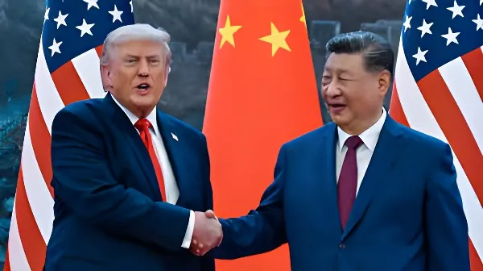

Du 13 au 15 mai 2026, Donald Trump a effectué sa première visite d'État en Chine depuis 2017, devenant ainsi le premier président américain à fouler le sol chinois depuis près d'une décennie. Reçu à Pékin par Xi Jinping dans le cadre d'un sommet au Grand Palais du Peuple, les deux dirigeants ont cherché à stabiliser une relation bilatérale marquée par des années de guerre commerciale, de tensions technologiques et de rivalité stratégique. Entre déclarations de façade et accords partiels sur le commerce, Taiwan et l'Iran, ce sommet révèle autant les limites que les ambitions d'un rapprochement fragile.
La visite à Pékin était initialement prévue pour la première semaine d'avril 2026. Elle a été repoussée au mois de mai en raison de la guerre que les États-Unis mènent contre l'Iran depuis le 28 février, qui a accaparé l'attention de l'administration américaine et modifié l'agenda diplomatique. Le 25 mars, la Maison Blanche a officiellement annoncé que le déplacement se tiendrait du 12 au 15 mai.
La préparation du sommet a mobilisé plusieurs mois de diplomatie préliminaire. Le secrétaire d'État Marco Rubio avait rencontré le ministre des Affaires étrangères Wang Yi dès le 13 février. Le sénateur Steve Daines avait conduit en mai une délégation bipartisane au Sénat — la première depuis l'entrée en fonctions de Trump —, rencontrant à Pékin le Premier ministre Li Qiang et le président de l'Assemblée populaire nationale Zhao Leji. La présence de deux C-17 de l'US Air Force à l'aéroport international de Pékin-Capital, repérés dès le 3 mai, avait par ailleurs confirmé l'imminence du voyage présidentiel.
L'année 2025 avait été dominée par une escalade tarifaire sans précédent entre Washington et Pékin, marquée par des droits de douane punitifs mutuels et une guerre technologique portant notamment sur les puces électroniques et les terres rares. La Chine avait répondu en limitant les exportations de minéraux critiques indispensables à l'industrie américaine — de l'électronique grand public aux avions de chasse. Ce levier a pesé sur la dynamique des négociations.
Un premier dégel est intervenu lors du sommet de Busan, en marge de l'APEC, le 30 octobre 2025 : Trump et Xi s'y sont rencontrés pour la première fois depuis le début du second mandat américain, convenant d'une trêve commerciale provisoire avec suspension des tarifs les plus punitifs. La Cour suprême des États-Unis a par ailleurs invalidé en février 2026 les tarifs douaniers généraux de Trump fondés sur l'International Emergency Economic Powers Act, réduisant sensiblement les marges de manœuvre tarifaires de l'administration.
Arrivée de Trump à l'aéroport de Pékin-Capital. Il est accueilli sur le tarmac par le vice-président chinois Han Zheng, envoyé par Xi Jinping. Des drapeaux américains et chinois ornent l'autoroute ; des gratte-ciels affichent en caractères lumineux « Pékin vous souhaite la bienvenue ».
Réception au Grand Palais du Peuple : Xi accueille Trump pour une première séance de discussions officielles. Les deux dirigeants annoncent s'être accordés sur la construction d'une « relation sino-américaine constructive de stabilité stratégique ». Xi et Trump visitent ensuite le Temple du Ciel — Trump devient le deuxième président américain en exercice à y accéder après Gerald Ford en 1975.
Banquet d'État en l'honneur de Trump. Xi déclare que les relations sino-américaines sont « les plus importantes du monde ». Trump qualifie Xi d'« ami » et salue des discussions « extrêmement positives et constructives ». Il invite officiellement Xi et son épouse Peng Liyuan à la Maison Blanche pour le 24 septembre 2026.
Dernière session de travail. Trump annonce la commande de 200 avions Boeing par la Chine. Washington lève les restrictions d'exportation sur les puces NVIDIA H200 pour dix grandes entreprises chinoises, dont Alibaba, Tencent, ByteDance et JD.com. Trump quitte Pékin à destination des États-Unis.
Sur le plan commercial, la commande de 200 appareils Boeing représente la première acquisition chinoise d'avions américains depuis 2017 (300 avions à l'époque), bien en deçà des 500 unités espérées par l'industrie. Le représentant américain au Commerce Jamieson Greer a évoqué un accord d'achats agricoles chinois d'un montant de « plusieurs dizaines de milliards de dollars » sur trois ans. La Chine a également restauré les importations de bœuf américain en autorisant de nouveaux certificats d'importation. Aucun accord majeur sur les terres rares ou l'intelligence artificielle n'a été annoncé. Des économistes soulignent que les engagements d'investissement de 2017 — 250 milliards de dollars promis — ne s'étaient pas concrétisés, appelant à la prudence.
Sur l'Iran, Xi et Trump ont tous deux affirmé qu'un Iran nucléaire est inacceptable. La Chine a assuré en amont, via le secrétaire à la Défense Pete Hegseth, qu'elle ne livrerait pas d'armes à Téhéran — en particulier pas de missiles sol-air. Pékin reste toutefois le premier partenaire commercial de l'Iran et son principal acheteur de pétrole, ce qui lui confère un levier diplomatique considérable dans ce dossier. Sur Taiwan, Xi a averti solennellement que mal gérer cette question risquerait de mettre « toute la relation en grand péril ». Le communiqué de la Maison Blanche, lui, n'a pas mentionné Taiwan, se concentrant sur le volet commercial.
Le sommet de Pékin de mai 2026 ne marque pas la fin des tensions structurelles entre les États-Unis et la Chine. Les désaccords fondamentaux — sur Taiwan, les contrôles à l'exportation technologique, les droits de douane résiduels, la liberté de navigation en mer de Chine méridionale — demeurent entiers. Ce que les deux puissances ont cherché à construire, c'est un cadre de gestion de leur rivalité : limiter les crises, préserver les échanges, éviter une confrontation directe. La visite de Xi à Washington, prévue pour le 24 septembre, et la présence attendue des deux présidents à l'APEC de Shenzhen en novembre indiqueront si cette diplomatie au sommet peut se traduire en résultats durables.
From 13 to 15 May 2026, Donald Trump paid his first state visit to China since 2017, becoming the first U.S. president to set foot on Chinese soil in nearly a decade. Welcomed in Beijing by Xi Jinping at the Great Hall of the People, the two leaders sought to stabilise a bilateral relationship scarred by years of trade war, technology rivalry, and strategic competition. Between declaratory gestures and partial agreements on trade, Taiwan, and Iran, the summit reveals as much about the limits as the ambitions of a fragile rapprochement.
The Beijing visit was initially planned for the first week of April 2026. It was pushed back to May because of the war the United States has been waging against Iran since 28 February — a conflict that has dominated the administration's attention and reshaped the diplomatic calendar. On 25 March, the White House officially announced that the trip would run from 12 to 15 May.
Preparing the summit required months of preliminary diplomacy. Secretary of State Marco Rubio had already met Chinese Foreign Minister Wang Yi on 13 February. In early May, Senator Steve Daines led the first bipartisan U.S. Senate delegation to China since Trump took office — meeting Premier Li Qiang and NPC Chairman Zhao Leji in Beijing. The sighting of two U.S. Air Force C-17 transport planes at Beijing Capital International Airport on 3 May — routinely used to carry presidential motorcades — further confirmed the trip's imminence.
The year 2025 was dominated by an unprecedented tariff escalation between Washington and Beijing, involving punishing mutual duties and a technology war centred on semiconductors and rare earths. China responded by restricting exports of critical minerals essential to American industry — from consumer electronics to fighter jets — giving Beijing significant leverage in the negotiations that followed.
A first thaw came at the Busan summit on the sidelines of APEC on 30 October 2025: Trump and Xi met for the first time since the start of Trump's second term, agreeing to a provisional trade truce suspending the most punitive tariffs. In February 2026, the U.S. Supreme Court also struck down Trump's broad "reciprocal" tariffs as unconstitutional under the International Emergency Economic Powers Act, significantly narrowing the administration's tariff room for manoeuvre.
Trump lands at Beijing Capital International Airport. He is greeted on the tarmac by Chinese Vice President Han Zheng, dispatched by Xi Jinping. American and Chinese flags line the highway; skyscrapers light up with the words "Beijing Welcomes You."
Official reception at the Great Hall of the People: Xi hosts Trump for a first round of formal talks. Both leaders announce agreement on building a "constructive China-U.S. relationship of strategic stability." They then visit the Temple of Heaven — Trump becomes only the second sitting U.S. president to do so, after Gerald Ford in 1975.
State banquet in Trump's honour. Xi declares the Sino-American relationship "the most important in the world." Trump calls Xi a "friend" and describes the talks as "extremely positive and constructive." He formally invites Xi and his wife Peng Liyuan to the White House on 24 September 2026.
Final working session. Trump announces China's order of 200 Boeing aircraft. The U.S. Department of Commerce lifts export restrictions on NVIDIA H200 chips for ten major Chinese firms, including Alibaba, Tencent, ByteDance, and JD.com. Trump departs Beijing for the United States.
On trade, the 200-aircraft Boeing order marks China's first purchase of American planes since 2017 (300 at the time), well below the 500 units the industry had hoped for. U.S. Trade Representative Jamieson Greer described an expected agreement for China to purchase "double-digit billions" of dollars in U.S. agricultural products annually over three years. China also restored U.S. beef imports by issuing new licences. No major deal was struck on rare earths or artificial intelligence. Economists noted that the $250 billion in investment pledges from 2017 never materialised — a reminder to treat new announcements with scepticism.
On Iran, both Xi and Trump affirmed that a nuclear-armed Iran is unacceptable. China gave advance assurances — conveyed by Defense Secretary Pete Hegseth — that it would not supply weapons to Tehran, including surface-to-air missiles. Yet Beijing remains Iran's largest trade partner and top oil buyer, giving it considerable leverage. On Taiwan, Xi warned solemnly that mishandling the issue would put "the entire relationship in great jeopardy." The White House readout, however, made no mention of Taiwan, focusing instead on trade.
The Beijing summit of May 2026 does not mark the end of structural tensions between the United States and China. The fundamental disagreements — over Taiwan, technology export controls, residual tariffs, and freedom of navigation in the South China Sea — remain intact. What both powers sought to build was a framework for managing their rivalry: containing crises, preserving trade flows, and avoiding direct confrontation. Xi's planned visit to Washington on 24 September, and both presidents' expected attendance at the APEC summit in Shenzhen in November, will indicate whether this summit diplomacy can translate into durable results — or whether the pattern of 2025's turbulent reversals is simply repeating itself at a higher register.